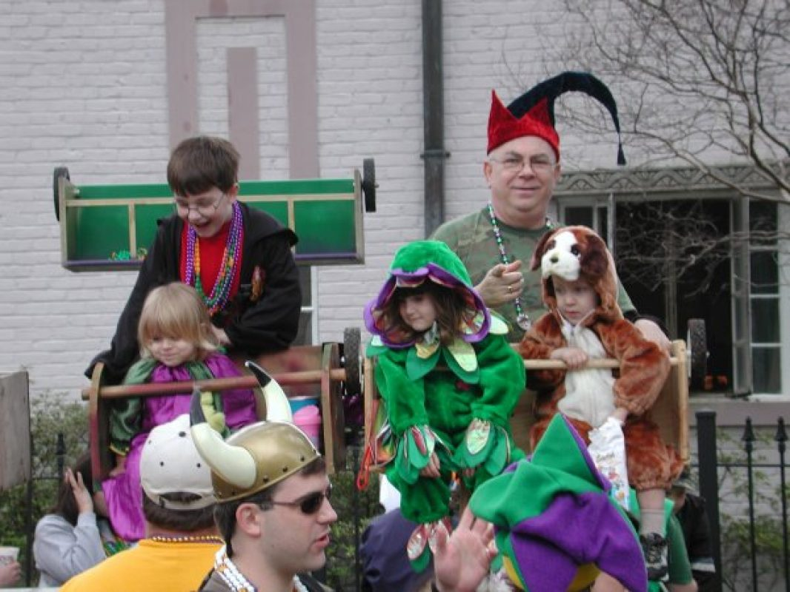
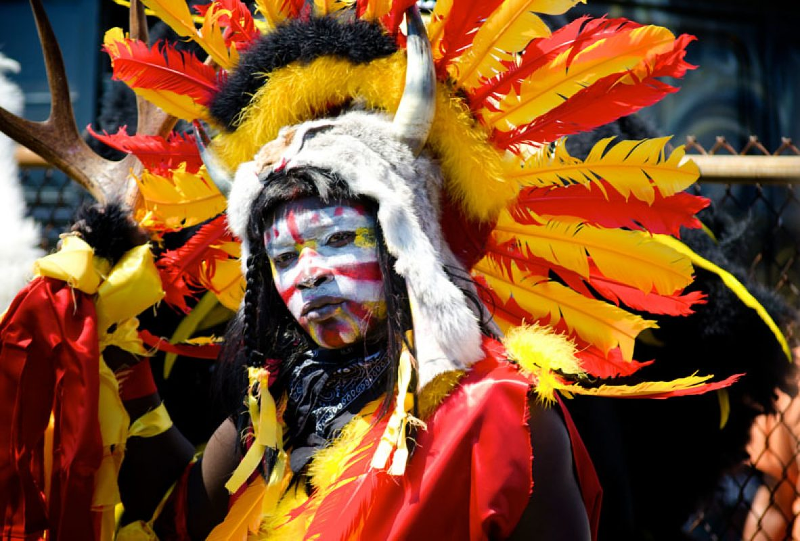

ALL ABOUT MARDI GRAS
The more you know about Mardi Gras tradition, the more fun you’ll have.
Mardi Gras. Two little words with an infinitely large explanation. For different people it’s
different
things, an event, an idea, a day, a way of life, piece of history, state holiday, or a million
parades
and countless memories. Think you know Mardi Gras? That it’s all about booze and beads? Think again!
When Is Mardi Gras?
-
Mardi Gras or Fat Tuesday is always 47 days before Easter. Carnival season begins on Jan. 6, Twelfth Night, the Christian holy day of the Epiphany, and ends with Mardi Gras. It's a celebration of life that precedes the fasting and simple living during the Christian season of Lent. Because Easter is variable, Mardi Gras can be any Tuesday between Feb. 3 and March 9 and so the length of Carnival fluctuates accordingly.
Why does Mardi Gras fall on different dates each year?
-
The date of Mardi Gras changes every year because it's connected to Easter, which can fall on any Sunday between March 23 and April 25. Mardi Gras day always takes place 47 days before Easter.
Do I need tickets?
-
There is no need for tickets to see a parade...all of them are FREE!! That is why it is called "The Greatest Free Show on Earth!". You only get tickets if you want to sit down on stands as the parades pass.
What about those colors?
-
In 1872, Rex, the king of Carnival, proclaimed the official colors of Mardi Gras to be purple, green and gold. While Arthur Hardy believes they were probably chosen simply because they looked good together, Rex assigned a meaning to the colors in his 1892 parade titled Symbolism of Colors: Purple represents justice, green stands for faith, and gold signifies power.

What is the weather usually like during Mardi Gras?
-
The weather during Mardi Gras can vary from very cold to very warm, almost hot. Sometimes it will change from one extreme to the other during the same day. It’s a good idea to layer your clothes since a chilly morning may turn into a warm afternoon.
Since you will be spending long days outside, pack comfortable shoes and clothes that can get somewhat dirty. Don’t forget to check the forecast for rain. If storms are predicted, then you’ll definitely want to bring a raincoat!
Go ahead to our about page to check out the weather forecast in the area
How much does it cost to go to Mardi Gras?
-
It's free! Not only that, but you'll leave with bags of Mardi Gras beads and throws. That's why we call it the "Greatest Free Show on Earth!"
Can I bring my kids to Mardi Gras?
-
By all means, yes! Contrary to public perception, Mardi Gras is a family celebration. Those of us who grew up in New Orleans feel guilty once our children have grown up and we continue going to every parade, because we used to use "taking the children" as our excuse! Bring big bags (even large garbage bags!) to hold all of the stuff they will catch. Throws often include toys, stuffed animals, beads and more.

The only place you should avoid with kids is the French Quarter (where no full-size parades pass anyway). We recommend seeing the parades when they begin on St. Charles Avenue near Napoleon, since parades can last until 11 p.m. near the end of the route.
The Garden District portion of St. Charles is a family area where you will see many families staking out their parade watching position, having picnics, playing ball, and having fun under the beautiful oak trees. You don't have to worry about the streetcars, as they stop running in this area during Mardi Gras.
You may also want to consider taking your kids to the parades in the suburban areas like Metairie, which is only 10 minutes away from New Orleans. Metairie's Caesar parade, the Saturday before Mardi Gras weekend, is the parade Disneyworld features on Mardi Gras day. Kids love it!
What is Family Gras?
-
Family Gras is a FREE celebration of Carnival and family that takes place two weekends before Fat Tuesday (Mardi Gras Day), and is located just ten minutes from downtown New Orleans in the suburb of Metairie. In 2019 it moved to a brand new location – Clearview Shopping Center at 4436 Veterans Memorial Boulevard.
With crowds surpassing 80,000 each year, it’s big family fun just outside the Big Easy! Bring your kids to enjoy the traditional spectacle of Mardi Gras parades, authentic New Orleans cuisine, local art at the Art Market, a Kids' Court with face painting and interactive games, and free outdoor concerts by both national artists and Louisiana's own.
In past years, acts have included John Oates, Michael McDonald, Brett Eldredge, B.J. Thomas, The Righteous Brothers, The Gatlin Brothers, Taylor Swift, Michael McDonald, Cyndi Lauper, Cowboy Mouth, Blood Sweat & Tears, Wilson Phillips, Montgomery Gentry, The Drifters, Frankie Valli and the Four Seasons, Tony Orlando, Kansas, Billy Ray Cyrus, The Monkees, Sheena Easton, Jesse McCartney, Brian Williams, The Marshall Tucker Band, and Amanda Shaw.
Where should I go if someone needs CPR or first aid during a parade?
-
Red Cross volunteers, in partnership with New Orleans first responders, will be providing basic first aid in some of the most populated areas along the parade routes. They are trained in CPR and first aid and will assist the ill and injured at each of their stations positioned along the parade routes.
First aid stations will be available on the following corners along St. Charles Avenue during many of our larger parades the last two weeks of Mardi Gras season:
Canal Street | Napoleon Avenue | Washington Avenue | Felicity Street | Lee Circle Additionally, first aid stations will be available at Orleans Avenue and North Hennessy Street, as well as North Carrolton Avenue and Bienville Street on the Saturday before Mardi Gras for the Endymion parade.
When and where do the Mardi Gras Indians parade?
-
The Mardi Gras Indians only parade on Mardi Gras day and on Super Sunday (generally the Sunday closest to St. Joseph’s Day in March).

The Mardi Gras day routes are not published anywhere, but they happen in and around their inner city neighborhoods. Some sources say that you will see the Creole Wild West tribe at the corner of LaSalle and 2nd Streets sometime between 9 a.m. and 11 a.m. after the Krewe of Zulu passes by. Other tribes meet at the corner of Claiborne and Orleans following the Zulu parade.
The New Orleans Mardi Gras Indian Council always has their Indian Sunday on the third Sunday of March, around St. Joseph's Day. Their festivities begin at Noon in A. L. Davis Park (at Washington & LaSalle Streets) where the Mardi Gras Indians once again dress in their feathers and suits, and take to the streets to meet other "gangs."
Also, the Tambourine and Fan organizations traditionally hold thier "Super Sunday" parade on the Sunday closest to St. Joseph's Day, with the event beginning at Bayou St. John. In recent years, there has been yet a third Super Sunday called Big Sunday that falls in April during the open weekend between French Quarter Festival and Jazz Fest. No specific details are available on these events at this time.
What is Twelfth Night?
-
Twelfth Night (aka, the Feast of the Epiphany and Three Kings' Day) is January 6th and is the official start of Mardi Gras every year. While the date of Fat Tuesday changes, Twelfth Night does not.
Why are masks worn?
-
By law, float riders must always have a mask on. On Fat Tuesday, masking is legal for everyone else, and the elaborate masks that some wear add to the fun.
How is a king chosen?
-
The method of selecting a king varies from krewe to krewe. Some krewes hold random drawings, while others invite a celebrity guest to be their king. Rex, the King of Carnival, is chosen by the School of Design, who sponsors the Rex parade. His identity is revealed the day before the parade.